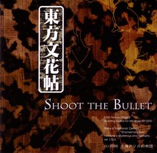

- Welcome to Touhou Wiki!
- Please register to edit. For assistance, check in with our Discord server or IRC channel.
Shoot the Bullet
Shoot the Bullet | |
|---|---|
|
 | |
| Developer | |
| Publisher | |
| Released |
Full: December 30, 2005 |
| Genre |
Vertical Danmaku Photography Shooting Game |
| Gameplay |
Single-player Story Mode |
| Platforms | |
| Requirements |
|
Touhou
Contents
Gameplay[edit]
Shoot the Bullet works like a normal danmaku game, with one main difference. You still have to dodge bullets that are thrown at you, but you are unable to shoot at the boss to deal damage. Instead, you must use Aya's camera to take a certain amount of pictures of the boss. To assist the player, Aya's camera is capable of eliminating all of the bullets within the viewfinder when a shot is taken, even if the boss is not within the photo. The shot is considered successful when the boss is featured in the photo, and it will be given a score based on certain criteria including the amount and type of bullets in the photo. The bosses included in this game come from the games Embodiment of Scarlet Devil to Phantasmagoria of Flower View.
Name and Concept[edit]
The concept of Shoot the Bullet had existed since Embodiment of Scarlet Devil. ZUN experimented with the idea previously, but the results didn't satisfy him, and the concept was placed to the side. A character who takes pictures needed to be created, so in Phantasmagoria of Flower View, Aya Shameimaru, a photographing tengu, was introduced. As the new photography game was being created, the Touhou fanbook Bohemian Archive in Japanese Red was in production. This book contained various interviews that Aya had done with other characters. The photography game was intended to be a minigame on the Bohemian Archive in Japanese Red CD, but it ended up as the 9.5th Touhou game.
The idea was to add new stages to the game as time went by. [1] However, ZUN later announced that there would not be new stages, as he wanted to move on to newer projects. [2]
On the 14th of March, 2010, Double Spoiler was released as the sequel to Shoot the Bullet. It shares the same qualities as Shoot the Bullet, being a photography game with Aya Shameimaru. It features bosses from Mountain of Faith to Undefined Fantastic Object, as well as a new playable character, Hatate Himekaidou. [3]
Story[edit]
In Shoot the Bullet, you play as Aya Shameimaru as she photographs the bosses from various Touhou games. However, no one ever reveals why she is taking these photos. In fact, at one point it is pointed out that "No one knows the purpose of the photos, except Aya", and the only reason she does not shoot the opponents is "not to be nice, but because she doesn't want her bullets in the picture."
Music[edit]
The game soundtrack of Shoot the Bullet features six tracks: one title/menu screen theme, and five photo themes. Like the previous games, the title screen contains the same theme that would later be featured in "Theme of Eastern Story" from Akyu's Untouched Score vol.5. The fifth theme, "Wind God Girl" (風神少女), was also featured on the Bohemian Archive in Japanese Red CD and Phantasmagoria of Flower View. The same track would later be used in Scarlet Weather Rhapsody as Aya's theme. The photo themes are numbered in the order that the player will encounter them in the game.
An arranged version of "Retrospective Kyoto" (レトロスペクティブ京都) would be included in the "ZUN's Music Collection" CD Retrospective 53 minutes. In the following CD, Magical Astronomy, the third photo theme, "Sleepless Night of the Eastern Country" (東の国の眠らない夜), was also featured.
Press[edit]
ZUN announced the game on his blog Invisible Games and Japanese on November 13, 2005, with some screenshots.[4] These screenshots were supplemented in later blog posts.[5][6] The game was released at Comiket 69 on the 30th of December, 2005. In the following month, three patches were released over a period of three days.[1][7][8][9]
Gallery[edit]
Back Cover.
Game CD.
English patches[edit]
Touhou Community Reliant Automatic Patcher / THCRAP
- Community translations from the Touhou Patch Center wiki.
- Select lang_en during patching.
- Video walkthrough
- Also available as a pre-packaged standalone (not recommended).
These patches are a community translation based on Touhou Wiki and the English Touhou Patch Center Portal.
Visit the thpatch game page to find the specific patch contents for Shoot the Bullet.
- Alternative English Static Patch (Requires v1.02a update)
External Links[edit]
Official[edit]
Unofficial[edit]
References[edit]
- ↑ 1.0 1.1 ZUN (January 9, 2006). "東方文花帖ver1.01a" (in 日本語). Retrieved August 28, 2011.
- ↑ ZUN (Oktober 10, 2006). "オクトーバーリザレクション" (in 日本語). Retrieved August 28, 2011. Check date values in:
|date=(help) - ↑ ZUN (March 3, 2010). "東方Project 第12.5弾" (in 日本語). Retrieved August 27, 2011.
- ↑ ZUN (November 13, 2005). "文花帖シュート・ザ・ブリット" (in 日本語). Retrieved August 28, 2011.
- ↑ ZUN (November 25, 2005). "本当に冬コミは早い" (in 日本語). Retrieved August 28, 2011.
- ↑ ZUN (November 29, 2005). "デザインの真実" (in 日本語). Retrieved August 28, 2011.
- ↑ ZUN (January 11, 2006). "東方文花帖ver1.01b" (in 日本語). Retrieved August 28, 2011.
- ↑ ZUN (January 12, 2006). "東方文花帖ver1.01c" (in 日本語). Retrieved August 28, 2011.
- ↑ ZUN (January 13, 2006). "東方文花帖ver1.02a（正規バージョン予定）" (in 日本語). Retrieved August 28, 2011.
| |||||||||||||||||||||||||||||||||||||||||||||||||||||
| ||||||||||||||||||||||||